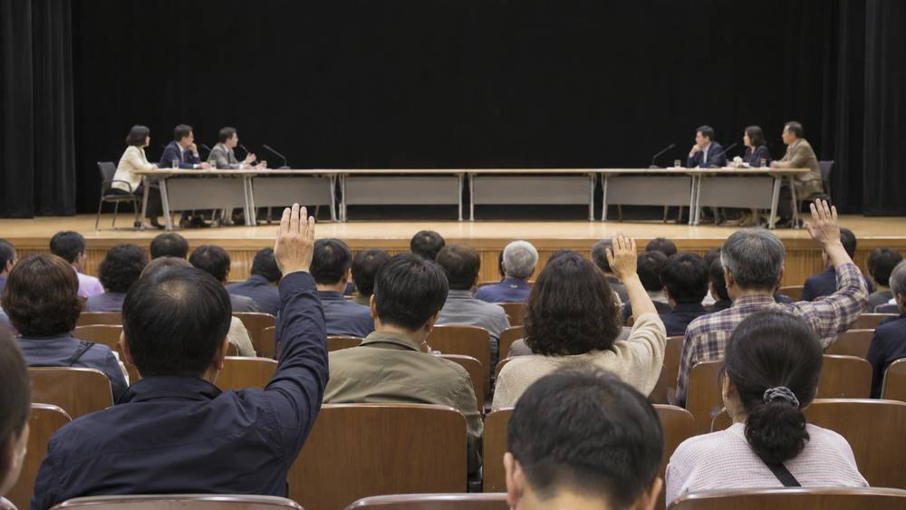

원전 공론화위원회 11월 25일 공개토론회, 현장 참석 신청은 23일까지

'원전공론화.kr' 누리집에 국민 의견 게시판 / 현장 청중 100여 명 추첨, 12월 11~13일 숙의토론회 뒤 12월 중 정부에 권고안
전력수급기본계획을 위한 원전 공론화위원회(위원장 은재호)가 11월 25일 오전 8시 30분부터 낮 12시까지 서울 정동1928아트센터 2층 이벤트홀에서 공개토론회를 연다. 참석 신청은 위원회 누리집(원전공론화.kr)에서 23일까지 받고, 신청자가 많으면 추첨으로 현장 청중 100여 명을 고른다.
토론회는 '미래 전력수급에서 우리 사회가 고려해야 할 사항은 무엇인가'와 '미래 우리 사회에서 원전의 역할은 무엇인가' 두 세션으로 열리며, 세션마다 원전 감축 측과 확대 측 전문위원이 설명·토론한 뒤 현장과 유튜브 생중계로 들어온 질문에 답한다. 위원회는 앞서 11월 4일과 10일 회의에서 '전력망의 안정성을 확보하려면 무엇이 필요한가', '원전 활용의 성과와 한계' 같은 세부 의제를 정했다.
16일 문을 연 누리집에는 누구나 글을 남길 수 있는 '국민 의견' 게시판과 시민참여단 전용 학습방이 있다. 시민참여단은 12월 11일부터 13일까지 숙의토론회에서 10명 안팎의 분임(작은 토론 모둠)으로 토의하고 분임별 대표 질문을 전문위원에게 묻고, 위원회는 그 결과를 바탕으로 12월 중 정부에 권고안을 낼 계획이다.
시민에너지 관점
본지가 11월 14일 보도한 기후시민회의에서는 시민참여단 215명이 권고안 70건을 확정했다. 원전 공론화도 시민참여단의 숙의로 권고안을 만들지만, 토론이 원전 감축과 확대를 견주는 틀에 머물면 주민이 직접 소유하는 재생에너지와 지역 분산 전원은 '다른 전력 수단'의 한 갈래로 밀려날 수 있다. 송전선과 발전소를 둘러싼 갈등을 풀려면 어떤 발전원이냐와 함께 누가 전기를 만들고 이익을 나누느냐를 물어야 한다. 지역 에너지협동조합과 햇빛소득마을 주민들이 23일까지 공개토론회 참석을 신청하고 '국민 의견' 게시판에 목소리를 남겨야 한다.
출처: 전력수급기본계획을 위한 원전 공론화위원회·기후에너지환경부 2026-11-16 보도자료 「원전 공론화 누리집 16일 개설… 공개토론회 참석 신청 17일부터」(붙임 공개토론회 개요) 원문 보기
출처: 국무조정실 2026-11-14 보도자료 2026 기후시민회의 최종토론회 원문 보기
原発公論化委員会、11月25日に公開討論会 会場参加の申し込みは23日まで
「원전공론화.kr」サイトに国民意見の掲示板 / 会場の聴衆100人余りを抽選、12月11~13日の熟議討論会を経て12月中に政府へ勧告案
「電力需給基本計画のための原発公論化委員会」(委員長ウン・ジェホ)は11月25日午前8時30分から正午まで、ソウルの貞洞1928アートセンター2階イベントホールで公開討論会を開く。参加申し込みは委員会のウェブサイト(원전공론화.kr)で23日まで受け付け、申込者が多い場合は抽選で会場の聴衆100人余りを選ぶ。
討論会は「未来の電力需給で私たちの社会が考慮すべきことは何か」と「未来の私たちの社会で原発の役割は何か」の2セッションで行われ、セッションごとに原発縮小側と拡大側の専門委員が説明・討論した後、会場とユーチューブ生中継で寄せられた質問に答える。委員会はこれに先立ち、11月4日と10日の会議で「電力網の安定性を確保するには何が必要か」「原発活用の成果と限界」などの細部議題を決めた。
16日に開設されたサイトには、誰でも書き込める「国民意見」掲示板と市民参加団専用の学習ページがある。市民参加団は12月11日から13日までの熟議討論会で10人前後の分科(小さな討論グループ)に分かれて話し合い、分科ごとの代表質問を専門委員に尋ね、委員会はその結果をもとに12月中に政府へ勧告案を提出する計画だ。
市民エネルギーの視点
本紙が11月14日に報じた気候市民会議では、市民参加団215人が勧告案70件を確定した。原発公論化も市民参加団の熟議で勧告案をまとめるが、討論が原発の縮小と拡大を比べる枠にとどまれば、住民が直接所有する再生可能エネルギーや地域の分散型電源は「他の電力手段」の一つとして脇に追いやられかねない。送電線や発電所をめぐる対立を解くには、どの電源かと同時に、誰が電気をつくり利益を分け合うのかを問わなければならない。地域のエネルギー協同組合や「日差し所得村」の住民は23日までに公開討論会への参加を申し込み、「国民意見」掲示板に声を残すべきだ。
出典: 전력수급기본계획을 위한 원전 공론화위원회·기후에너지환경부 2026-11-16 보도자료 「원전 공론화 누리집 16일 개설… 공개토론회 참석 신청 17일부터」(붙임 공개토론회 개요) 原文を読む
出典: 국무조정실 2026-11-14 보도자료 2026 기후시민회의 최종토론회 原文を読む
核电公论化委员会11月25日举行公开讨论会，现场参加报名截至23日
“원전공론화.kr”网站设国民意见留言板 / 现场听众抽选100余人，12月11~13日审议讨论会后于12月内向政府提交建议案
“电力供需基本计划核电公论化委员会”(委员长Eun Jae-ho)将于11月25日上午8时30分至中午12时，在首尔贞洞1928艺术中心2层活动厅举行公开讨论会。参加报名通过委员会网站(원전공론화.kr)受理至23日，报名人数较多时将抽选约100名现场听众。
讨论会分为“未来电力供需中我们的社会应考虑什么”和“未来我们的社会中核电的作用是什么”两场，每场由主张减少核电和主张扩大核电的专家委员分别说明并相互讨论，之后回答现场及YouTube直播收到的提问。委员会此前在11月4日和10日的会议上，确定了“确保电网稳定需要什么”“核电利用的成果与局限”等细分议题。
16日开通的网站设有任何人都可留言的“国民意见”留言板和市民参与团专用学习空间。市民参与团将在12月11日至13日的审议讨论会上分成10人左右的小组(小型讨论组)讨论，并由各小组向专家委员提出代表性问题，委员会计划据此于12月内向政府提交建议案。
市民能源视角
本报11月14日报道的气候市民会议上，215名市民参与团成员确定了70项建议。核电公论化同样通过市民参与团的审议形成建议案，但如果讨论停留在比较核电减少与扩大的框架内，居民直接拥有的可再生能源和地方分布式电源可能被挤到“其他电力手段”的一个分支。要化解围绕输电线和电站的矛盾，不仅要问用哪种电源，还要问由谁发电、由谁分享收益。地方能源合作社和“阳光收入村”居民应在23日前报名参加公开讨论会，并在“国民意见”留言板上发出声音。
来源: 전력수급기본계획을 위한 원전 공론화위원회·기후에너지환경부 2026-11-16 보도자료 「원전 공론화 누리집 16일 개설… 공개토론회 참석 신청 17일부터」(붙임 공개토론회 개요) 查看原文
来源: 국무조정실 2026-11-14 보도자료 2026 기후시민회의 최종토론회 查看原文
Nuclear deliberation committee holds public debate on Nov. 25; sign-ups to attend close on the 23rd
Public comment board on the committee's website / About 100 audience members to be drawn by lot; recommendations to government in December after Dec. 11-13 deliberation
The Nuclear Power Public Deliberation Committee for the Basic Plan for Electricity Supply and Demand, chaired by Eun Jae-ho, will hold a public debate from 8:30 a.m. to noon on Nov. 25 in the second-floor event hall of the Jeongdong 1928 Art Center in Seoul. Applications to attend are open on the committee's website (원전공론화.kr) until the 23rd, and if demand is high about 100 audience members will be chosen by lot.
The debate has two sessions, "What should our society consider in future electricity supply and demand?" and "What is the role of nuclear power in our future society?", in each of which expert members for reducing and for expanding nuclear power present and debate before answering questions from the hall and from the YouTube livestream. At its meetings on Nov. 4 and 10, the committee set sub-topics such as "What is needed to keep the grid stable?" and "The achievements and limits of using nuclear power."
The website, launched on the 16th, has a "public opinion" board open to anyone and a study room for the citizen panel. At a deliberation forum from Dec. 11 to 13, the citizen panel will discuss in breakout groups of about 10 people (small discussion groups) and put each group's main question to the expert members, after which the committee plans to submit recommendations to the government in December.
Citizen Energy View
At the climate citizens' assembly this paper reported on Nov. 14, a citizen panel of 215 people finalised 70 recommendations. The nuclear deliberation will also produce recommendations through a citizen panel, but if the debate stays within a frame that weighs cutting nuclear against expanding it, community-owned renewables and local distributed generation risk being pushed aside as just one of the "other power options." Easing conflicts over transmission lines and power plants means asking not only which source but also who generates the power and who shares the profit. Local energy cooperatives and residents of sunlight-income villages should apply by the 23rd to attend the debate and make their voices heard on the "public opinion" board.
Source: 전력수급기본계획을 위한 원전 공론화위원회·기후에너지환경부 2026-11-16 보도자료 「원전 공론화 누리집 16일 개설… 공개토론회 참석 신청 17일부터」(붙임 공개토론회 개요) Read the original
Source: 국무조정실 2026-11-14 보도자료 2026 기후시민회의 최종토론회 Read the original